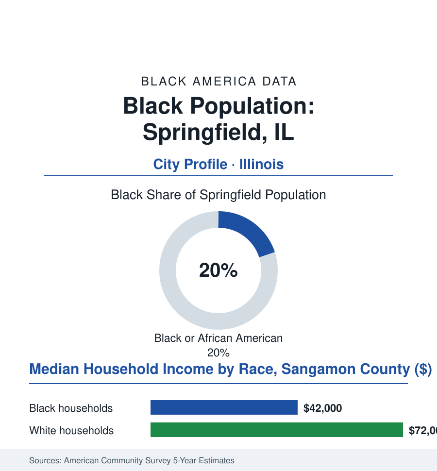

Black Cities
Black Springfield, Illinois: 23,000 People in Lincoln's Hometown
Springfield is where Lincoln rose and where, in 1908, a race riot shocked the nation into founding the NAACP — its Black community the capital's oldest institution after the statehouse itself.

Springfield's Black community numbers roughly 23,000 people — about 20% of the Illinois capital's 114,000 residents — in the city Abraham Lincoln called home, where Black families were among the earliest settlers and where American history pivoted twice within a few streets. It is a government town whose Black community predates the government. This article reads Springfield's numbers.
The Barber, the President, and 1908
The founding generation is in the record with unusual intimacy: William Florville, the Black barber whose shop stood by the statehouse, was Lincoln's barber and friend for two decades — the future president's letters and accounts preserving a Black businessman's place at the center of the capital's daily life from the 1830s on — and the Black churches and the AME congregation of the era made Springfield's community one of antebellum Illinois' anchors (a free community in a state whose Black Laws were among the North's harshest, its families' Underground Railroad work in the county histories). The second pivot is the city's wound and the nation's gain, and it is stated here as the record states it: in August 1908, a white mob's two-day rampage destroyed the Black business district, burned homes, and lynched two Black men — in Lincoln's hometown, within sight of his tomb — and the national horror at the location's symbolism moved the Northern activists who, the following year, founded the NAACP in direct response, Springfield 1908 standing in that organization's charter story as its founding provocation. The community rebuilt on the east side; the twentieth century layered the state-capital economy over it (the agencies' clerical workforce a Black middle-class engine in the public-sector file's Illinois edition, the insurance and hospital rows), and the desegregation fights proceeded through the schools and the city's services in the standard order, the community's churches and its NAACP branch — the local chapter of the organization its own catastrophe had summoned into being — carrying the institutional memory in unusually literal form.
The Capital's Working Present
The institutional present is the statehouse's shadow made civic: the Black caucus's hometown advantage (the capital's Black legislators and staff a community institution in themselves — the state's Black political class substantially housed, schooled, and churched in this one city in the civic data), the Springfield Urban League and the east side's development corporations working the corridor plans, the school district's long unitary-status history closing in the present century with the community's schools carrying the standard files. The Juneteenth celebration here has an argument few cities can match — celebrated blocks from the tomb of the man who signed the proclamation — and the attendance data treat it as the civic sacrament it is.
The present data describe a state capital's stable, bifurcated economy: the public payrolls (the agencies, the legislature's apparatus, the medical school and the hospital row of the Springfield medical district) anchoring the whole metro — the Black professional and clerical class of the state workforce among the community's defining strata in the occupational data, the pension file's Illinois chapters hanging over the government town's retirees in the fiscal data — against the east side's familiar rows (a Black median household income in the low forty-thousands in the county survey data, the poverty geography east of the tracks, the population's slow decline with the capital's flat census line). The heritage economy here is the nation's Lincoln industry — the presidential library and museum, the home site, the tomb's two million visitors in the tourism data — and the community's claim on its telling has been formally widening in the recent record: the 1908 sites' archaeological recovery (the burned district's foundations excavated during a rail project and now memorialized in the federal monument designations of the last decade — the riot's geography entering the national park system in the present century, the descendant community at the dedication), the Florville barbershop's story installed in the Lincoln narrative's main text. The city's forward data are a small capital's: the medical district's growth, the state workforce's stability, the heritage franchise's durability — and a Black community whose presence in the story is no longer a footnote to it, in the museums' own current telling.
Reading Springfield's Numbers
Twenty-three thousand people in the town that made Lincoln and, by its worst week, made the NAACP: Springfield is the cities file's most concentrated dose of the American paradox — the barber and the mob, the tomb and the burned district, inside one small capital's borders. The census counts the residents. The monuments, both of them, count the meaning.
More in Black Cities
Black Atlanta: Population, Distribution, and Growth of a Black Metropolis
Metro Atlanta holds more than two million Black residents — roughly one in three, second only to New York. The suburban distribution, migration history, and composition of Black Atlanta in the census data.
Black New York: The Largest Black Population in America
The New York metropolitan area holds about 3.4 million Black residents — more than any metro in the nation — and the city itself about two million. The census profile.
Black Washington: The District and the Metro
The Washington metro holds about 1.6 million Black residents, and the District itself — long a majority-Black city — now records a Black share near 41 percent. The census profile.
Source: U.S. Census Bureau, 2020 Census and American Community Survey 5-year estimates; City of Springfield and Sangamon County; Illinois State Museum and NAACP historical records.